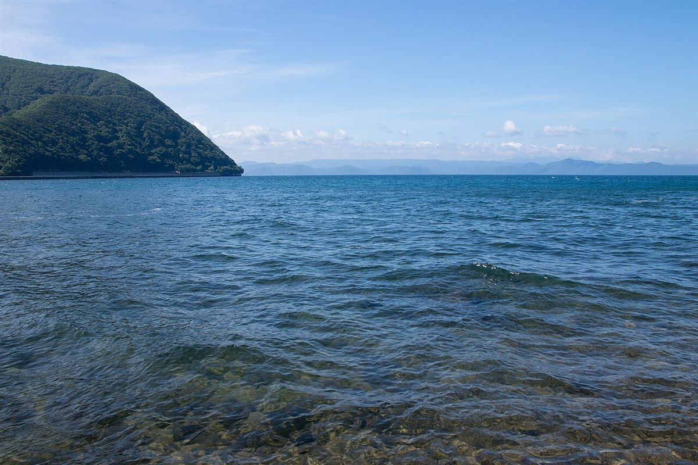

ABOUT
お店について
こはたcafé(木幡カフェ)は、福島県二本松市木幡治家にあるカフェです。お店の歴史・スタッフ・こだわりなどの詳細は準備中(お問い合わせください)です。
制作側のコンセプト案
以下は制作側の案です。実際のお店の考え方とは異なる場合があります。
- 山あいの時間に合わせる住所から山あいの集落とうかがえる場所の、ゆったりした空気を大切にした紹介ページにします。
- 一杯を主役にカップとコーヒーの写真を中心に、落ち着いた色合いで構成します。
- 最新情報はInstagramへ日々の様子はInstagramで、お問い合わせは電話で。迷わない導線にします。


基本情報
- 店名
- こはたcafé(木幡カフェ)
- 所在地
- 福島県二本松市木幡治家49
- 営業時間
- 準備中(お問い合わせください)
- スタッフ
- 準備中(お問い合わせください)